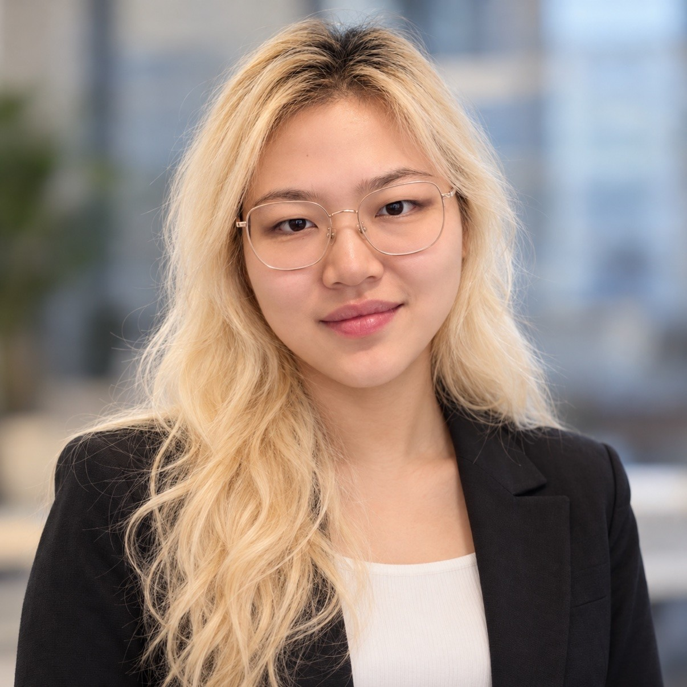
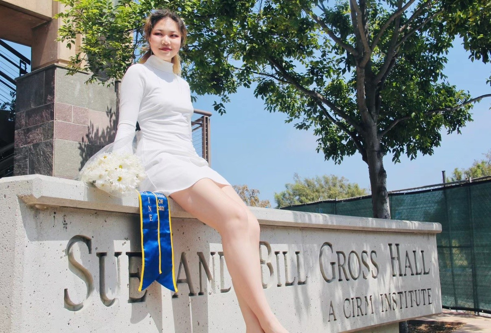
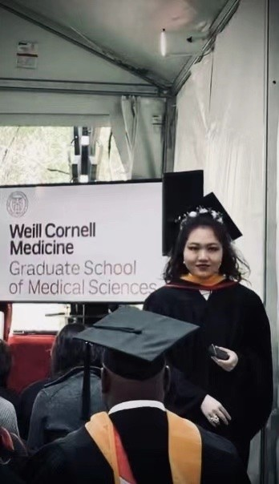
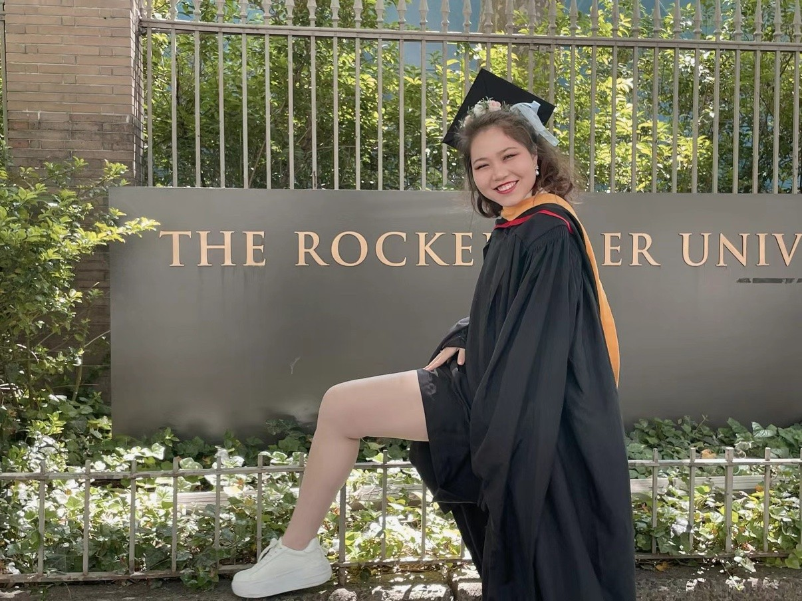
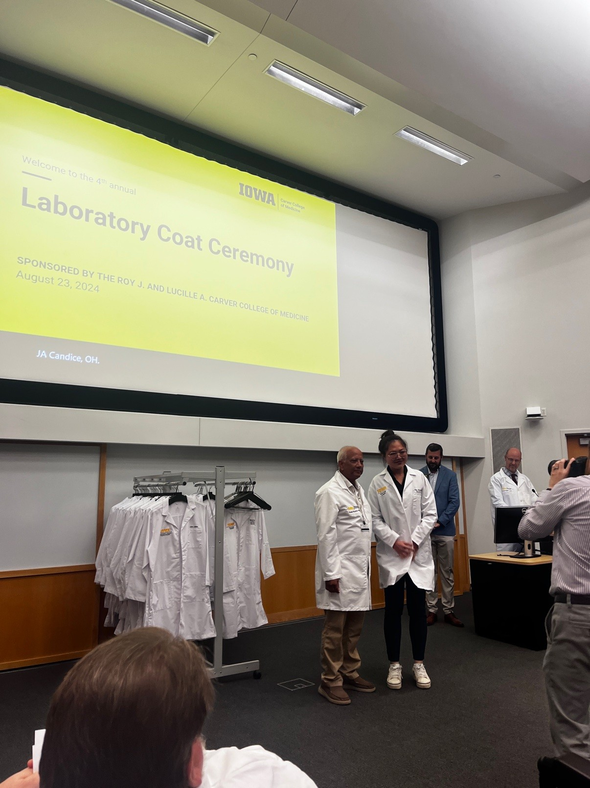
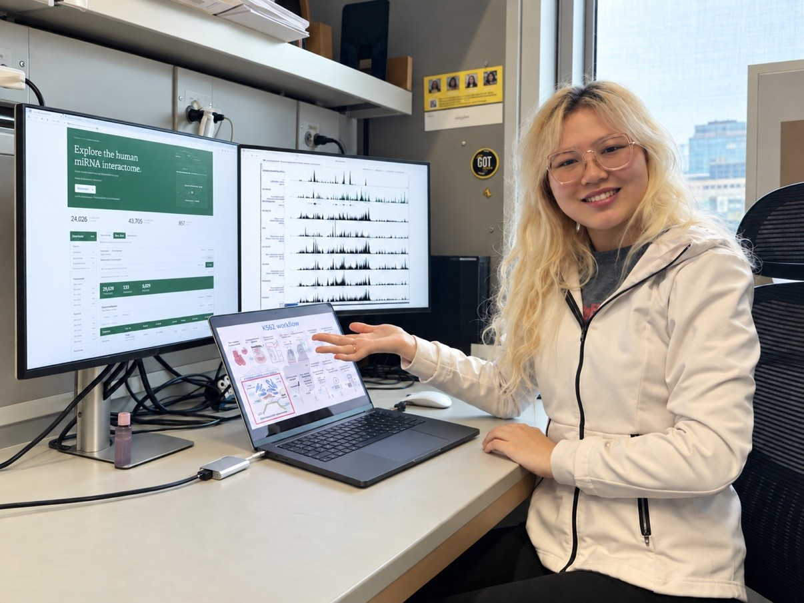
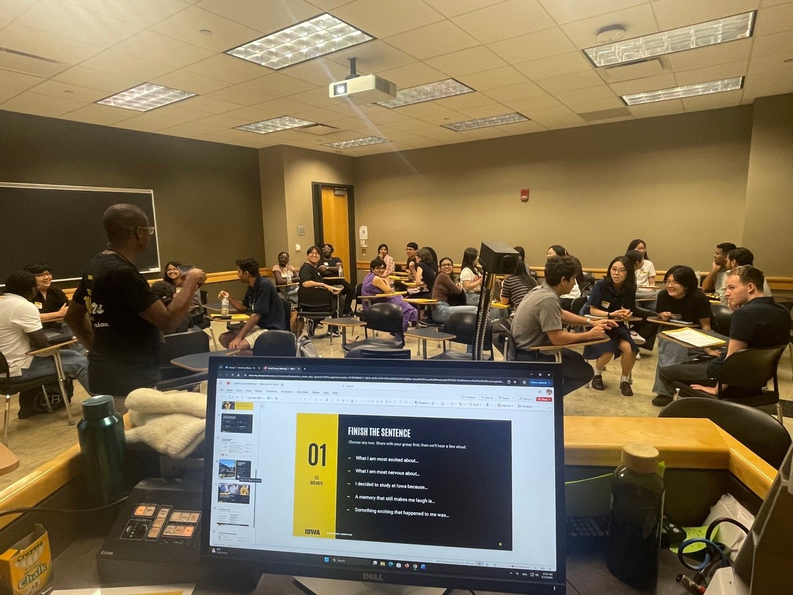

The Evolution and Mutational Robustness of Chromatin Accessibility in Drosophila
Genome Biology · 2023 · Co-author
Ph.D. Candidate · Molecular Medicine · University of Iowa
I bring experimental biology and computation together to understand human disease — and I’m building the business skills to turn discoveries into products that reach patients.

Selected work
Genome Biology · 2023 · Co-author
ICBB 2026 · Proceedings of NewTech’26 · Sole author
ICBBS 2025 · ACM · Published online January 2026
Theoretical and Natural Science · 2024 · Sole author
Highlights in Science, Engineering and Technology · 2023 · Equal-contribution author
Conference paper · publication pending
ICHSM 2026 · Accepted for IOS Conference Proceedings
Best Presentation Award, ICHSM 2026
GitHub
From a thesis database to a health app prototype: research turned into things people can use.
A searchable explorer of AGO2-associated miRNA binding sites from human eCLIP. I built the HPC workflows, annotation QC, web interface, and AWS deployment.
A private GLP-1 dose, weight, and side-effect tracker that compares a user’s progress with clinical trial results and FDA data, and prints a one-page summary for the doctor.
Integrated multi-cohort and single-cell analysis of PHLDA3 in thyroid carcinoma, with reproducible code, figures, and manuscript.
A hypothesis-generating pipeline mapping a shared transcriptional signature between heart failure and ageing skeletal muscle, with a CLIP-supported miRNA/TF network.
A LASSO gene-signature pipeline that classifies colorectal cancer versus normal colon tissue from TCGA RNA-seq; companion code for my ICBB 2026 paper.
Rheumatoid arthritis multi-omics integration across genetics, single-nucleus RNA/ATAC, spatial, bulk, and proteomics data for GeNeDis 2026.
Skills
Each skill is one step in moving research from the bench, through data, to patients and the market.
Profile
I’m a Ph.D. candidate in Molecular Medicine at the University of Iowa. In the Boudreau lab, I study how AGO2, microRNAs, and messenger RNAs interact in human tissues, with a focus on atrial fibrillation.
My path began in the humanities, moved through neuroscience and health informatics, and brought me to a question I still follow: how does biological data become medicine — and what does it take, beyond the science, to bring it to patients?
At the bench
Human tissue experiments and AGO2 eCLIP to map miRNA–mRNA interactions.
At the computer
Sequencing analysis, statistical genetics, and pipelines that make complex data usable.
Toward the market
Learning how discoveries become products: health economics, case analysis, and life sciences strategy.
How I’m learning the business ↗Journey
California → New York → Iowa.
B.S. Biological Sciences · 2021
Biology, neuroscience, and my first research projects in the Seiler Lab.
Read this chapter
M.S. Health Informatics · 2023
Programming, statistics, and the use of data in healthcare.
Read this chapter
Research assistant · during my master’s
Computational genetics and deep learning in the Zhao lab, alongside my Cornell degree.
Read this chapter
Ph.D. Candidate · Molecular Medicine
Bringing experimental RNA biology and bioinformatics together in the Boudreau lab.
Read this chapter
Select any photo to see the full image.
About me
How one question about data and medicine led me from the lab toward the business of science.
I am a PhD candidate in Molecular Medicine at the University of Iowa, working where RNA biology meets bioinformatics. My thesis maps how AGO2, microRNAs, and messenger RNAs interact in real human heart tissue — the first map of its kind — to understand atrial fibrillation, the most common heart rhythm disorder, and to find new therapeutic targets.
But the question that has followed me through every change of field is simpler than any of that: how does biological data become medicine? How does something we measure in a lab become something that changes a patient's life? Every turn I have taken has been an attempt to get closer to an answer.
My answer so far: a discovery helps no one until it becomes something people can use — a dataset others can search, a diagnostic, a therapy — and until someone makes the decisions that carry it to patients. That is the work I am preparing for.
01 / Humanities first
In China, I studied the humanities. In high school, I was strongest in history and geography — I loved them, and I was good at them — because they taught me how to think: how to see people inside systems, how change actually happens, and how to put a complicated idea into words someone else can follow.
I still use that training every day. Science is often described as a technical skill, but most of science is communication — explaining why a result matters, persuading people to care, and turning data into a story that leads to a decision. The humanities gave me that before biology gave me anything else.
02 / UC Irvine
When I came to the United States for college, I started in sociology and ecology. I cared about human systems and the natural world. But I kept running into the same frustration: I could describe a problem — a declining ecosystem, a broken system — without being able to fix it. I wanted to work in a field where discovery could become intervention.
So I moved into biology. At UC Irvine I majored in biological sciences, and I fell for neurobiology. I joined the Seiler Lab at the Sue and Bill Gross Stem Cell Research Center, where we studied age-related macular degeneration — testing whether retinal organoids grown from human embryonic stem cells could help a degenerating retina. My days were electrophysiology, staining, behavioral tests, and imaging: electroretinograms, immunohistochemistry, OCT, and watching how rats responded to what they could see. I was promoted to research assistant, ran my own projects, and mentored younger students. I also won an Excellence in Research Award and made the Dean's Honor List.
Then COVID came, and for almost two years I worked mostly alone. The lab was nearly empty. I have lived with depression for years, and the empty lab made it heavier. It was the hardest stretch of my training — lonely, slow, and uncertain — and getting through it taught me something no course could: how to keep going when no one is watching.
Presenting a poster during that time made something else clear: I could run an experiment, but I could not yet fully speak the language of the data behind it. I needed more statistics, and stronger data skills. So I added a minor in health informatics — and that one decision rerouted my career.
03 / Cornell + Rockefeller
After Irvine I went to Weill Cornell Medicine in New York for a master's in health informatics. I learned programming, data management, AI, and health insurance policy — the machinery that turns medical data into decisions.
During my master's at Weill Cornell Medicine, I also worked as a research assistant in the Zhao lab at Rockefeller University, just across the street. I pursued the degree and the RA role at the same time, studying health informatics while working on computational genetics and genomics. We used deep convolutional neural networks to predict where chromatin opens up — which parts of the genome are accessible and ready to be read — across three fruit fly species. That work became a paper in Genome Biology.
My experimental training at Irvine and computational work in New York made me want a project where I could use both: design the experiments, analyze the data, and follow the results back to a biological mechanism.
04 / University of Iowa

That desire to bring my training together led me to a PhD in Molecular Medicine at the University of Iowa. In the Boudreau lab, I now combine wet-lab experiments and computational analysis in the same project, with roughly half my work in each. My thesis uses eCLIP sequencing to draw a map of AGO2–miRNA–mRNA interactions in human heart tissue, and to ask which of those interactions carry genetic risk for atrial fibrillation. It is detailed, technical work — but I think of it as cartography: making a map of a place no one has mapped before, so that others can navigate it toward treatments.
The project runs the whole arc: preparing real human tissue samples, running the experiments, analyzing the data, linking what we find to clinical phenotypes, and explaining the biology — including the functions of variants no one understands yet. And it is growing into something bigger than a thesis: a database, with a website to share the data openly. It may become intellectual property, even patents. My hope is that these variants become molecular diagnostic tools — a way to test patients for many different diseases. The goal is 12 human tissues: the world's first human miRNA database.
I built the first version of that resource myself: miR-engageMINT, from the HPC pipelines and annotation quality control to the searchable website deployed on AWS. It is my first research product — data organized so that other people can actually use it.
Along the way I have also worked on pan-cancer multi-omics, Alzheimer's metabolomics biomarkers, and the evolution of chromatin accessibility — each one a different way of asking the same question: what does the data say, and what should we do about it?
05 / International students

Supporting international students is a personal commitment. I speak up for our rights and the everyday issues that shape our lives, and I like being someone people can turn to. Many students have contacted me through social media before even arriving on campus. I share what I have learned, answer questions about student life, and help them find resources and a sense of community.
I have always liked building things for other students. At UC Irvine I served on the executive board of the BioSci International Student Association, running its social media. At Iowa I am president of the Association of Multicultural Scientists — I organize 20+ events for over 400 students — and communication director of the International Student Advisory Board, where I advocate for international students, help prepare resources for students before they arrive, and organize events like Fresh Check Day, Mental Health Day, and Chinese New Year. I have also volunteered with the American Red Cross, at blood drives and disaster preparedness trainings.
Mental health is personal for me. Therapy has helped my depression get better, and I want to help more people find their way out of it too. That is part of why I do this work: science is not only about discoveries, it is about the people doing the discovering — and they deserve support.
06 / Beyond the lab
Outside the lab, I am usually at a theatre, or on the road. I have seen at least a hundred live shows — musicals, plays, opera — and I still get excited every time the lights go down. I also dance. And I like to travel: so far I have been to eight countries, and I plan to keep adding to that list. Science is what I do; the stage and the road are what refill me.
I am also learning French and Spanish. I enjoy the small, everyday challenge of finding another way to express an idea and connect with people.
I also work out — I have lost about 20 kilograms since I started my PhD — and I share my home with a cat.
07 / Learning the business
Iowa also gave me something I did not expect: serious training in translational medicine — how science moves from the bench to the bedside. And that raised a new question for me: translation needs more than science. It needs venture capital, technology transfer, seed incubators — the business machinery that turns a discovery into a drug. I realized I did not know that world at all.
So I began learning business the way I learned bioinformatics: by myself, and on my own money. I paid for business courses out of my own pocket. I use AI as a study partner — to explain concepts, to argue with, to test my thinking. I practice case interviews, the way consultants learn to structure a messy problem and defend a recommendation. I follow the industry the way I follow the literature: McKinsey reports, STAT news, trial readouts — because in consulting, as in science, you cannot think clearly about a field you do not follow.
In a healthcare case competition, my team reached the semifinals. At ICHSM 2026, I presented my own health services research — how Medicare Advantage growth relates to skilled nursing facility occupancy — and received the Best Presentation Award. And at HealthHack 48, I built DoseTrack, a working prototype that helps people on GLP-1 medicines compare their progress with clinical trial results.
I am still early in this turn. But I have done this before — humanities to biology, wet lab to dry lab — and each time, the new field has made the old ones more useful, not less. Biology taught me mechanism. Data taught me evidence. Business is teaching me decisions: how to weigh trade-offs, how to see a whole market instead of a single molecule, and how to turn an analysis into an action.
A bioinformatician I admire, Tommy Tang, taught himself programming in the fourth year of his PhD, when a spreadsheet could not open his data. He quotes a line I have kept: looking back, the dots connect, even when they do not make sense looking forward. His path — wet lab to command line, biologist to computational biologist — is the shape of my own path, one field further along.
Humanities taught me to communicate. The wet lab taught me to respect evidence. Data taught me to think at scale. Business is teaching me to decide. None of those steps was a detour. They were all preparation for the same job: connecting computation, mechanism, and medicine — and now, the business of getting medicine to patients.
08 / What comes next
Right now I am doing three things at once: pushing my PhD research forward, building up business knowledge, and laying the groundwork for turning science into business. I want to work in biotech, pharma, or life sciences consulting as a scientist who understands both biological mechanisms and computational evidence — and who can also see the strategy: which program to prioritize, which patients to serve, which path makes a therapy real. If you are building something at that intersection — a drug, a diagnostic, a team, a decision — I would like to talk.
Everything on this page started the same way: with curiosity. I follow the question, and the question keeps moving.
What comes next
I want to work where science meets strategy — in biotech, pharma, or life sciences consulting — helping teams decide which programs to advance, which patients to serve, and how a discovery becomes a product. I bring the bench, the data, and a growing command of the business behind them.
Let’s connect